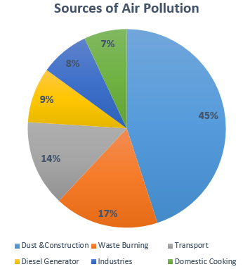

Types of pollutants from transport vehicles using fuel.
Pollutant
- Carbon monoxide
- Nitrogen Oxides
- Sulphur Dioxide
- Particulate Matter and
Respirable Particulate
Matter (SPM & RPM)
- Lead
- Benzene
- Hydrocarbons
- Reduced dependence of imported fossil fuel for the Country
Effects
- Affects the cardiovascular system, exacerbating cardiovascular disease symptoms, particularly angina; may also
particularly affect fetuses, sick, anemic and young children, affects the nervous system, impairing physical
coordination, vision and judgments, creating nausea and headaches, reducing productivity and increasing
personal discomfort.
- Nitrogen Oxides Increased susceptibility to infections, pulmonary diseases, impairment of lung function and eye, nose and throat
irritations.
- Affect lung function adversely.
- Fine particulate matter may be toxic in itself or may carry toxic (including carcinogenic) trace substance, and can
alter the immune system. Fine particulates penetrate deep into the respiratory system irritating lung tissue and
causing long-term disorders.
- Impairs liver and kidney, causes brain damage in children resulting in lower I.Q., hyperactivity and reduced
ability to concentrate.
- Both toxic and carcinogenic. Excessive incidence of leukemia (blood cancer) in high exposure areas.
- Potential to cause cancer
References
[1] https://media.neliti.com/media/publications/279076-a-review-of-vehicular-pollution-in-urban-0f3926d1.pdf